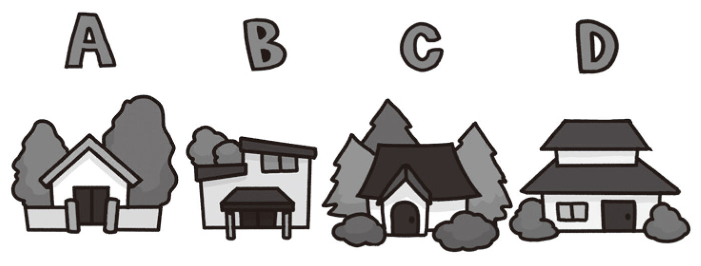

| 13歳からの論理思考力のトレーニング 「正しく推理する力」が身につく163問 | |
| 小野田 博一 | |
| 株式会社ＰＨＰ研究所 (2011) | |

13 歳からの論理思考力のトレーニング
「正しく推理する力」が身につく163問
小野田博一
まえがき
本書は、論理的思考力（注）の基礎トレーニングの本です。
理詰めに考え続けることができるようになるための思考トレーニングの本です。
（注）本書の問題は、Law School Admission Test（ＬＳＡＴ) ［米国でロースクールに入ろうとしている人が受けるテスト］ の Analytical Reasoning のセクションの問題と同様に、すべてマッチング問題です。本書の問題は Analytical Reasoning の問題ですから、「分析思考」の問題ともいえます。これは、与えられた情報・資料から理詰めに結論を導き出す問題です。
多くの人は、数秒しか理詰めに考えることができません。それで、理詰めに考え続けなければならない問題をほとんど解けず、解けるのは数秒で解ける問題だけです。そこで、理詰めに（少なくとも数分ほどは）考え続ける訓練をしよう、というのが本書の目的です。
基礎トレーニングの本なので、（巻末のおまけセクションは別として）たいていの問題は５分以内に解ける程度の難易度にしてあります（が、気づくべき点に気づかないなどの理由で、５分では解けない問題もたまにはあることでしょう）。
ただし、問題を解く際には、５分以内に解けるか否かの点にはこだわらず、答えを得るまでにかかる時間のことは、まったく気にしないでいてください。
本書を読む際にあなたに必要なことは、どの問題も正確に解くことです。長時間かけて解いてもかまいません。そうして、理詰めに考える際の正確さ・慎重さ、および持久力を身につけてください。
「５分以内に解ける問題で持久力がつく？」とあなたはいま思ったかもしれませんが、多くの人は「瞬時に解ける問題」しか解けず、論理的な思考は数秒しか続きませんから、理詰めに数分ほど考えたら、論理的な思考の持久力は相当つきます。
本書は理詰めに考える訓練用ドリルのようなものなのですが、単純な計算ドリルのような味気ない外見にしてしまうとトレーニングが苦痛になりかねないので、問題の外見に多少は娯楽色を加えています。気持ちを明るく保って、楽しくトレーニングしましょう！
◎単純な問題は何問も解いているうちに、どれも同じような問題に見えてくる欠点があります。そこで、解くのに飽きそうになった人のために、本書の終わりに「難問セクション」を置くことにしました。単純な問題に飽きそうになったら、「難問セクション」の問題を１つか２つ解いて気分転換をしてください（「難問セクション」とはいっても、実は難問ではなく、単に、解くのに時間がかかるだけの問題ですから、気楽にどうぞ）。
実力判定！
本書の問題の中には、《実力判定問題》と書いてある問題が全部で41 問あります。
その実力判定問題に正しく答えることができたかを記録していってください（実力判定問題に対する正解数の合計だけを記録すれば十分です）。本書を解き終えたときに、全41 問の実力判定問題に対する正解率によって、巻末の実力判定表であなたの論理思考力が判定できます。
これは、トレーニングをより楽しくするためのもの、いわば遊びのためのものです。どの問題もリラックスしている状態で解きましょう。
ところで、かりに《実力判定問題》の正解率が不満足な出来であっても、あなたは落胆する必要はありません。その場合は、もう一度本書を最初から解きなおしてみましょう。２度目はきっと、大幅に正解率が、つまり実力が、アップしていることでしょう。
なお、本書で「特定できる」という表現を使っていますが、これは「１つに定めることができる」の意です。つまり、その場合、解のなかには「あるいは（or ）」を含まないことを意味します。
【各章の問題数について】
分析思考の問題が初めての人には、慣れるまでが一苦労で、一旦慣れればあとはスイスイと解けるでしょうから、本書の始めのほうの章の問題数は少な目で、後ろにいくにしたがって量が多めになっています。各章の問題数が均一ではないことを変に思う読者がいるかもしれませんが、均一でないのはそういう理由なのです。
本書の問題はどれも新作問題ですが、単純な問題ばかりなので、私が他の本用に作って出題した問題とまったく同じものが数問以上あるかもしれません。
小野田博一
問題の解き方についての注意点２つ
1
「『Ａが２で、Ｂが３で、Ｃが１』という組み合わせでうまくいくかな？」などのように考えてそれをチェックする──つまり、ふと思いついた組み合わせでつじつまが合う（矛盾が生じない）かどうかをランダムに確認して正解を得ようとするのはやめましょう。ランダムな試行錯誤を何度繰り返しても、論理的に考える能力は上達しないでしょう。
「ある１つの組み合わせをチェックする」方法をとる場合は、いくつかの組み合わせをランダムにチェックするのではなく、すべての組み合わせをシステマティックにチェックしましょう（それなら、問題解決のためのシステマティックな取り組み方が身につくでしょう）。
ちなみに、「可能な組み合わせのチェック」を正確に行なえるか否かが、分析思考力（の一番の幹）で、LSATの Analytical Reasoning のテストで測られるのがこの能力です。
2
問題を解く際は、紙と鉛筆を使いましょう。「頭の中で考えるだけで解こうとする」のはやめましょう。
数秒で解ける問題は別ですが、頭の中で考えるだけで解こうとするとかなりしんどいものですから、ついいい加減に考えてしまうことになりがちです。そうなると、理詰めに考えるトレーニングではなく、「いい加減に考えるトレーニング」をしていることになってしまいます。つねに理詰めに正確に考えることができるようになるまでは、紙と鉛筆を使って問題を解きましょう。
13 歳からの論理思考力のトレーニング 目次
装 幀──松昭教（bookwall）
イラスト──ヒガシ マサユキ
Questions 1-6
第1 章
準備運動
Questions 1-6
『姫と城』

この図に示されているのは３人の姫（百 合 姫、菫 姫、椛 姫）の城の位置です。城は３人ともそれぞれ別です。
【Ｑ1 】
以下の手がかりが与えられているとしたら、３人の城はそれぞれどこ？
 椛姫の城は菫姫の城よりも南寄り
椛姫の城は菫姫の城よりも南寄り
菫姫の城は百合姫の城よりも西寄り
★巻末にヒントあり
【Ｑ2 】
以下の手がかりが与えられているとしたら、３人の城はそれぞれどこ？
菫姫の城は百合姫の城よりも東寄り
椛姫の城は菫姫の城よりも北寄り
【Ｑ3 】
以下の手がかりが与えられているとしたら、３人の城はそれぞれどこ？
椛姫の城は百合姫の城よりも東寄り
椛姫の城は菫姫の城よりも南寄り
【Ｑ4 】
以下の手がかりが与えられているとしたら、３人の城はそれぞれどこ？
椛姫の城は百合姫の城よりも西寄り
椛姫の城は菫姫の城よりも北寄り
【Ｑ5 】 《実力判定問題》
以下の手がかりが与えられているとしたら、１人の城が特定できます。それは誰で、その城はどこ？
菫姫の城は百合姫の城よりも東寄り
椛姫の城は菫姫の城よりも南寄り
【Ｑ6 】 《実力判定問題》
以下の手がかりが与えられているとしたら、１人の城が特定できます。それは誰で、その城はどこ？
椛姫の城は百合姫の城よりも東寄り
椛姫の城は菫姫の城よりも北寄り
Questions 7-14
第2 章
試技
（腕ならし）
どんな問題でも──本書の問題にしても、入試問題にしても──問題を見たときに感情的に反応しないことは大切です。問題の外見にビビってしまうと、問題はとても解きづらくなってしまうからです。
この章では、交換問題、順位問題、数の操作の問題、真偽判定問題などのタイプの問題に、ごく単純な例題でなじんでおきましょう。そうすれば、本書の後半の問題を見てギョッとすることは避けられるでしょう。
余談 ：交換問題は、難解な問題を容易に作れるタイプの（味わい深い）問題です。本章にある交換問題は単純なトレーニング問題なのですが、それでもあなたはその問題で、独特な味わいを楽しめるかもしれません。
Questions 7-8
『人形の交換』
小梅と美奈と千賀がそれぞれ人形を持っていました（人形のドレスの色はそれぞれ異なり、緋 、朱 、紅 で順不同）。そして３人の中で人形を交換し合って、いま、誰もが１つずつ人形を持っていますが、自分の人形を持っている子はいません。
交換後のいま、美奈は紅の人形を持っています。
朱の人形のもとの持ち主は、いま、小梅のものだった人形を持っています。
（以下の２問を解き終えてから、答えを見てください。）
【Ｑ7 】
緋の人形のもとの持ち主は誰？
【Ｑ8 】
千賀のものだった人形を、いま持っているのは誰？
★巻末にヒントあり
Questions 9-10
『パンくい競争』
パンくい競争で、Ａ組～Ｄ組の４人（名前は巴 、湊 、唯 、ゆめ、で順不同）が１位～４位となりました。同順位の子はいません。
Ａ組の子の２位あと（次の次）は巴です。
湊の次はＢ組の子です。
Ｃ組の子の次は唯です。
（以下の２問を解き終えてから、答えを見てください。）
【Ｑ9 】 《実力判定問題》
Ｄ組の子は何位？
【Ｑ10 】 《実力判定問題》
ゆめは何位？
★巻末にヒントあり
Questions 11-12
『５個の梨』
葵 、弥生 、碧 の３人がいて、梨をそれぞれ１個～３個持っています（だれも整数個です）。３人の合計で５個です。
葵「弥生か碧は１個」
弥生「碧か葵は２個」
碧「葵か弥生は３個」
【Ｑ11 】
３人だれもが真実を述べている可能性はある？
【Ｑ12 】
３人だれもがウソをついている可能性はある？
★巻末にヒントあり
Questions 13-14
『鳥の絵』
茉 莉 、麻美、小梅の３人がそれぞれ異なる鳥（雉 、鶫 、梟 で順不同）を描きました。
茉莉「私か麻美は、鶫を描きました」
麻美「私か小梅は、梟を描きました」
小梅「私は雨の日が好きです」
【Ｑ13 】
鶫の子だけが真実を述べたとしましょう。このとき、３人が描いたのはそれぞれ何？
【Ｑ14 】
鶫の子だけがウソをついたとしましょう。このとき、３人が描いたのはそれぞれ何？
★巻末にヒントあり
コラム
分析思考力のピークは16 歳 ──トレーニングしないならば
本書の読者には、40 代の人も、50 代の人も、さらに年上の人もいるでしょう。そして、その人たちがこれまでに本書のタイプの問題を解いたことがないのなら、ここまで解きすすむまでに相当疲れていることでしょう。そして「このような問題は13 歳の子には無理だろう」と考えているかもしれません。──でも、その憶測は誤りです。分析思考力は加齢とともに上達し続けるものではないからです。ずっと昔に成人した人よりも、若者のほうが分析思考力は優れているのです。
詳しく書きますと、分析思考力は若いときにぐんぐん上達し、平均的には16 歳でピークに達します（文献：未発表資料）。もちろん、どこまでのレベルに達するかには個人差があります。ピーク後は、その能力はゆるやかに衰えていきます（文献：小野田博一『論理思考ＩＱパズル101』（ＰＨＰ研究所））。どの程度衰えるかにも、もちろん個人差があります。
──ところで、いまこれを読んだ大人の読者の中には（自分の年齢のことで）落胆した人がいるかもしれませんが、落胆する必要はありません。以上は、とくにトレーニングをしていない場合にはそうである、というだけのことです。本書を一度解き終えたときには、あなたの分析思考力は若いころのピークをはるかに超えているでしょう。本書を解き終えたときに、あなたの分析思考力が極端に上達していることは、本書を再び最初から解き始めれば、あなた自身で実感できるはずです。
分析思考能力はトレーニングで容易に上達可能なのです。
Questions 15-30
第3 章
予選
本章は予選のようなレベルの問題のセクションと考えてください。章の名前には深い意味はありません。
ここでは、平面配置問題、年齢問題のほかに、前書『13 歳からの論理トレーニング』ですでに扱っておいた「天使・悪魔・人間」タイプの分析問題を扱います。前書で「天使・悪魔・人間」タイプの問題を好きになった人（きっと多いでしょう）は、本章で「天使・悪魔・人間」の新たな問題をまた楽しんでください。
何をするにせよ、楽しむのは、上達の秘訣です。単純なトレーニングであろうと、受験勉強であろうと、楽しみましょう。──余談でしたね。でも、これはほんとに大切なことなんですよ。
Questions 15-18
『泉の精』
泉の精（雪、氷、華 ）の泉（それぞれ異なる）は下の地図の３つの位置です。
雪「華の泉は氷の泉よりも東寄り」
氷「雪の泉は華の泉よりも南寄り」
華「私は旅人が好き」
【Ｑ15 】
みなが真実を述べているなら、それぞれの泉はどこ？
【Ｑ16 】
みながウソをついているなら、それぞれの泉はどこ？
【Ｑ17 】
Ｃの泉の精だけがウソをついているなら、それぞれの泉はどこ？
【Ｑ18 】
Ｃの泉の精だけが真実を述べているなら、それぞれの泉はどこ？
★巻末にヒントあり
Questions 19-22
『３人の年齢』
ひなた、ユリカ、茉 莉 の３人がいて、年齢はそれぞれ異なり、13 歳から15 歳までです。
ひなた「ユリカは茉莉より年下です」
ユリカ「茉莉はひなたより年下です」
茉莉「私はモデルの仕事をしています」
【Ｑ19 】
15 歳の子だけが真実を述べているなら、３人の年齢は？
【Ｑ20 】
13 歳の子だけが真実を述べているなら、３人の年齢は？
【Ｑ21 】
15 歳の子だけがウソをついているなら、３人の年齢は？
【Ｑ22 】
13 歳の子だけがウソをついているなら、３人の年齢は？
★巻末にヒントあり
Questions 23-24
『４人の年齢』
梢 、絹、静、愛の４人がいて、年齢はそれぞれ異なり、11 歳から14 歳までです。
梢「絹は静より年上です」
絹「静は梢より年上です」
静「梢は13 歳ではありません」
愛「私は冬が好き」
【Ｑ23 】
11 歳の子だけが真実を述べているなら、４人はそれぞれ何歳？
【Ｑ24 】
14 歳の子だけが真実を述べているなら、４人はそれぞれ何歳？
★巻末にヒントあり
Questions 25-30
『天使、悪魔、人間』
天使、悪魔、人間の３人（Ａ、Ｂ、Ｃの３人で順不同）がいます。
天使はつねに真実を述べ、悪魔はつねにウソをつき、人間は真実を述べたりウソをついたりします。
【Ｑ25 】
２人が下のように言ったなら、３人はそれぞれ何？
Ａ「Ｂは人間」
Ｂ「Ｃは天使」
★巻末にヒントあり
【Ｑ26 】
２人が下のように言ったなら、３人はそれぞれ何？
Ａ「Ｂは天使」
Ｂ「Ｃは天使」
【Ｑ27 】
２人が下のように言ったなら、３人はそれぞれ何？
Ａ「Ｂは悪魔ではない」
Ｂ「Ｃは悪魔ではない」
【Ｑ28 】
２人が下のように言ったなら、３人はそれぞれ何？
Ａ「Ｂは人間ではない」
Ｂ「Ｃは悪魔ではない」
【Ｑ29 】 《実力判定問題》
Ａが「ＢかＣは天使です」と言ったのなら、その発言から得られる結論は何？
【Ｑ30 】 《実力判定問題》
２人が下のように言ったなら、１人のみ正体（天使か人間か悪魔か）が特定できます。誰が何？
Ａ「ＢかＣは人間です」
Ｂ「ＣかＡは人間です」
Questions 31-50
第4 章
地区大会本戦
本章では、多数派ゲーム問題、交換問題の本格版、日程問題のほかに、複数要素の真偽判定問題が登場します。
トレーニング問題とはいえ、解いて楽しい問題がいくつかあるでしょう。楽しんでください。
Questions 31-33
『多数派ゲーム、赤と黒』
柚 、静、綾 の３人が、カードで「多数派ゲーム」１回戦をすることにして、それぞれ赤か黒のカードを出しました。赤と黒の比は１対２（順不同）でした。ゲームの名のとおり、多数派の勝ちです。
勝った人の発言は真実で、負けた人の発言はウソです。
【Ｑ31 】 《実力判定問題》
柚が「私は赤を出しました」と言ったのなら、その発言からどんな結論が導ける？
★巻末にヒントあり
【Ｑ32 】
柚が「私は赤を出しました」と言ったとします。このとき、静は「私は黒を出しました」と言える？（言う可能性がある？）
【Ｑ33 】
柚と静が以下のように言ったなら、３人はそれぞれ何を出した？
柚「私は赤を出しました」
静「綾は赤を出しました」
Questions 34-37
『森の精』
森の精、雫 、霞 、霙 の森（それぞれ異なる）は下の地図の３つの位置です。
雫「霙の森は霞の森よりも東寄り」
霞「雫の森は霙の森よりも南寄り」
霙「私は旅人が好き」
【Ｑ34 】
みなが真実を述べているなら、それぞれの森はどこ？
【Ｑ35 】
みながウソをついているなら、それぞれの森はどこ？
【Ｑ36 】
Ａの森の精だけがウソをついているなら、それぞれの森はどこ？
【Ｑ37 】
Ａの森の精だけが真実を述べているなら、それぞれの森はどこ？
★巻末にヒントあり
Questions 38-39
『自転車の交換』
瞳 、香、夢の３人（年齢はそれぞれ異なり11 歳～13 歳で、順不同）が自分たちの自転車（色はそれぞれ異なり、白、黒、緑で順不同）に乗っています（１人１台）。が、いま、自分の自転車に乗っている子はいません（別の子の自転車に乗っているのです）。
瞳は12
歳。
香は緑の自転車に乗っている。
白い自転車に乗っている子は11
歳。
【Ｑ38 】 《実力判定問題》
黒い自転車の所有者は？
【Ｑ39 】
黒い自転車に乗っている子は何歳？
★巻末にヒントあり
Questions 40-42
『４人で制服の交換』
美弥、知美、香 菜 、瑞 希 の４人は、４人のなかで制服を交換し合いました。
自分の服を着ている子の発言はウソ、他の子の服を着ている子の発言は真実です。
【Ｑ40 】
４人が以下のように発言した場合、４人中２人については、だれの服を着ているかが特定できます。どの２人がだれの服を着ている？
美弥「私は瑞希の服を着ています」
知美「私は美弥の服を着ています」
香菜「私は美弥の服を着ています」
瑞希「私は美弥の服を着ています」
★巻末にヒントあり
【Ｑ41 】
４人が以下のように発言した場合は、だれがだれの服を着ている？
美弥「瑞希は知美の服を着ています」
知美「美弥は美弥自身の服を着ています」
香菜「知美は瑞希の服を着ています」
瑞希「私は13 歳です」
★巻末にヒントあり
【Ｑ42 】
４人が以下のように発言した場合は、だれがだれの服を着ている？
美弥「知美は私の服を着ています」
知美「香菜は私の服を着ています」
香菜「瑞希は知美の服を着ています」
瑞希「私はダイエット中です」
Questions 43-44
『日記』
理 子 、真夏、麻衣、小梅の４人が11 日（月曜）から14 日（木曜）のそれぞれ異なった日に、日記をつけ始め、誰もが複数日続けたあとで挫折しました。続けた日数はそれぞれ異なり、２日間、３日間、４日間、５日間（順不同）です。
理子は11
日が初日。
真夏は15
日が最終日。
麻衣は17
日が最終日。
16
日が最終日だった子がいる。
【Ｑ43 】 《実力判定問題》
小梅は何日間続けた？
【Ｑ44 】
理子は何日間続けた？
★巻末にヒントあり
Questions 45-50
『筆と硯』
瑠 璃 、乙 姫 、更 紗 の３人がいて、だれも筆と硯 の少なくとも一方は持っています。
一方だけの子の発言はウソで、両方持っている子の発言は真実です。
【Ｑ45 】 《実力判定問題》
瑠璃「乙姫は筆を持っています」
乙姫「更紗は硯を持っています」
更紗「瑠璃は片方だけを持っています」
１人だけ、何を持っているのかが特定できます。それは誰で、その子は何を持っている？
《注意：「Ｙを持っている」は「Ｙだけを持っている」の意ではないことに注意しましょう。》
【Ｑ46 】 《実力判定問題》
３人が以下のように言ったとします。
瑠璃「乙姫か更紗は筆だけ持っています」
乙姫「更紗か瑠璃は硯だけ持っています」
更紗「瑠璃か乙姫は両方持っています」
１人だけ、何を持っているのかが特定できます。それは誰で、その子は何を持っている？
《注意：「ＹかＺは、片方だけ持っている」は「ＹとＺのどちらか１人だけが、片方だけ持っている」の意ではないことに注意しましょう。「ＹとＺのうちの少なくとも１人は、片方だけ持っている」の意です。》
３人が以下のように言ったとします。
瑠璃「私たちのなかには、筆だけの子は１人もいません」
乙姫「私たちのなかには、硯だけの子は１人もいません」
更紗「私たちのなかには、両方とも持っている子はいません」
【Ｑ47 】 《実力判定問題》
（次の問題も解き終えてから、答えを見てください）
筆を持っているのが確実なのは誰？
【Ｑ48 】 《実力判定問題》
硯を持っているのが確実なのは誰？
３人が以下のように言ったとします。
瑠璃「私たちのなかには、筆だけの子がいます」
乙姫「私たちのなかには、硯だけの子がいます」
更紗「私たちのなかには、両方とも持っている子がいます」
【Ｑ49 】 《実力判定問題》
（次の問題も解き終えてから、答えを見てください）
筆を持っているのが確実なのは誰？
【Ｑ50 】 《実力判定問題》
硯を持っているのが確実なのは誰？
Questions 51-94
第5 章
日本選手権
ここからは、問題に登場する人の数が、これまでの問題よりも、概して若干増えます。ジャンケン問題や、奇偶判定を伴う問題が初登場し、数の操作（足し算・引き算）を伴う問題の本格版も登場します。
数の操作を伴う問題は、見かけは味気ないのですが、解くときに独特の味わいがあります。敬遠せずにその味わいを楽しみましょう。
Questions 51-52
『５人の家』
健、亮、操 、瞬、慎の５人の家は下図のＡ～Ｅの位置です（１人１軒で、順不同）。
健の家よりも亮の家のほうが東寄り。
亮の家よりも操の家のほうが南寄り。
操の家よりも瞬の家のほうが西寄り。
瞬の家よりも慎の家のほうが北寄り。
慎の家よりも亮の家のほうが西寄り。
【Ｑ51 】 《実力判定問題》
操の家はどれ？
【Ｑ52 】
亮の家はどれ？
★巻末にヒントあり
Questions 53-55
『隣り合う穴熊たちの家』
穴熊の家（洞穴）が下のように並んでいます。ググ、ビビ、ヅヅ、ガガの家（それぞれ別で、順不同）です。
【Ｑ53 】
４匹が以下のように言ったとします。
ググ「私とビビは隣り合っていません」
ビビ「私とヅヅは隣同士」
ヅヅ「私とググは隣り合っていません」
ガガ「私は２歳です」
Ａの穴熊だけがウソをついているなら、誰がどこの家？
★巻末にヒントあり
【Ｑ54 】
４匹が以下のように言ったとします。
ググ「私とビビは隣同士」
ビビ「私とヅヅは隣り合っていません」
ヅヅ「私とググは隣同士」
ガガ「私は昨日、鶫 を見かけました」
Ｂの穴熊だけがウソをついているなら、誰がどこの家？
【Ｑ55 】
４匹が以下のように言ったとします。
ググ「私とビビは隣同士」
ビビ「私とヅヅは隣同士」
ヅヅ「私とググは隣り合っていません」
ガガ「私は昨日、鶸 を見かけました」
Ａの穴熊だけが真実を述べているなら、誰がどこの家？
Questions 56-57
『絵画コンテスト』
校内絵画コンテストで、莉 乃 、祥 子 、真 琴 、瑞 穂 の４人が描いた絵（『夜』『夢』『沼』『海』で順不同）が１位から４位までとなりました（同順位なし）。
莉乃の絵の次点は『夜』。
『夢』の２位下（次の次）は祥子の絵。
『沼』は、真琴の絵よりも上位だけれど、１位ではない。
【Ｑ56 】 《実力判定問題》
瑞穂の絵は何位？
【Ｑ57 】
４位の絵は何？
★巻末にヒントあり
Questions 58-65
『桃』
理奈、聡 美 、千 佳 の３人がいて、それぞれが持つ桃の個数は０個以上、２個以下です。切った桃を持っている子はいません。
０個の子の発言はウソで、１個以上の子の発言は真実です。
３人が下のように言ったとしましょう。
理奈「聡美は１個」
聡美「千佳は１個」
千佳「理奈は１個ではありません」
【Ｑ58 】
３人合計で２個なら、それぞれが持っている桃の個数は？
【Ｑ59 】
３人合計で３個なら、それぞれが持っている桃の個数は？
【Ｑ60 】
３人合計で４個なら、それぞれが持っている桃の個数は？
３人が下のように言ったとしましょう。
理奈「聡美は２個」
聡美「千佳は２個」
千佳「理奈は２個ではありません」
【Ｑ61 】
３人合計で１個なら、それぞれが持っている桃の個数は？
【Ｑ62 】
３人合計で３個なら、それぞれが持っている桃の個数は？
【Ｑ63 】
３人合計で５個なら、それぞれが持っている桃の個数は？
【Ｑ64 】
３人が下のように言ったとしましょう。
理奈「聡美と千佳の合計は１個」
聡美「千佳と理奈の合計は２個」
千佳「理奈と聡美の合計は３個」
このとき、それぞれが持っている桃の個数は？
【Ｑ65 】
３人が下のように言ったとしましょう。
理奈「聡美と千佳の合計は０個」
聡美「千佳と理奈の合計は１個」
千佳「理奈と聡美の合計は２個」
このとき、それぞれが持っている桃の個数は？
Questions 66-67
『注文したもの』
夏実、美 鈴 、詩 穂 、加奈の４人の子がレストランで春巻、酢豚、焼売 、餃子 （１人１品で、順不同）を注文しました。それぞれの品の値段は異なり、500円、600円、700円、800円（順不同）です。
そして、誰もが、自分が注文したものを食べずに他の子が注文したもの（１品）を１人で食べました。
夏実は500円のものを注文した。食べたのは600円の品ではない。
春巻を注文した子は600円の品を食べた。
美鈴は700円の酢豚を食べた。
詩穂が注文したのは800円の品ではない。
【Ｑ66 】 《実力判定問題》
加奈が食べた品は？
【Ｑ67 】
詩穂が食べた品の値段は？
★巻末にヒントあり
Questions 68-73
『ジャンケン』
ゆかり、まりあ、ユリカの３人がジャンケン１回戦をして、１人が勝ち、２人が負けました。
勝った子の発言は真実、負けた子の発言はウソです。
【Ｑ68 】
３人が下のように言ったなら、３人はそれぞれ何を出した？
ゆかり「私はグーを出しました」
まりあ「私はグーを出しました」
ユリカ「私はチョキを出しました」
★巻末にヒントあり
【Ｑ69 】
３人が下のように言ったなら、３人はそれぞれ何を出した？
ゆかり「私はグーを出しました」
まりあ「私はチョキを出しました」
ユリカ「私が出したのはグーではありません」
【Ｑ70 】
３人が下のように言ったなら、３人はそれぞれ何を出した？
ゆかり「まりあはグーを出しました」
まりあ「ユリカはグーを出しました」
ユリカ「ゆかりはチョキを出しました」
【Ｑ71 】
３人が下のように言ったなら、３人はそれぞれ何を出した？
ゆかり「まりあはグーを出しました」
まりあ「ユリカはグーを出しました」
ユリカ「ゆかりが出したのはチョキではありません」
【Ｑ72 】
２人が下のように言ったなら、３人はそれぞれ何を出した？
ゆかり「まりあかユリカはグーを出しました」
まりあ「ユリカかゆかりはチョキを出しました」
【Ｑ73 】
２人が下のように言ったなら、３人はそれぞれ何を出した？
ゆかり「まりあかユリカはパーを出しました」
まりあ「ユリカかゆかりはパーを出しました」
Questions 74-76
『鞠』
琴 美 と千 鶴 の２人がいて、どちらも鞠 を１個以上持っています。
偶数個持っている子の発言は真実、奇数個持っている子の発言はウソです。
琴美「千鶴は３個以下」
千鶴「琴美は３個以上」
【Ｑ74 】
２人の合計が５個なら、２人はそれぞれ何個持っている？
★巻末にヒントあり
【Ｑ75 】
２人の合計が７個なら？
【Ｑ76 】 《実力判定問題》
２人の合計が６個なら？
Questions 77-79
『メロン』
琴 音 、美 咲 、小春の３人が、メロンをそれぞれ１～３個持っていて（だれも整数個）、３人の合計で５個です。
奇数個の子の発言は真実、偶数個の子の発言はウソです。ただし、偶数の者がいるか否かは不明です。
【Ｑ77 】 《実力判定問題》
琴音が「美咲は２個」と言ったなら、ある１人の個数が特定できます。
それは誰で、何個？
★巻末にヒントあり
【Ｑ78 】
２人が下のように言ったなら、３人はそれぞれいくつ持っている？
琴音「美咲は３個」
美咲「小春は３個」
【Ｑ79 】
２人が下のように言ったなら、３人はそれぞれいくつ持っている？
琴音「美咲は１個」
美咲「小春は１個」
Questions 80-83
『隣り合う４人の家』
葵 、杏 、楓 、彩 の４人の家（それぞれ別の家）は下のように並んでいます。

両端の子の発言はウソで、その他の子の発言は真実です。
ただし、両端の子が２人とも発言しているとはかぎりません。
【Ｑ80 】
３人が下のように言ったなら、それぞれの家はどこ？
葵「Ａは、私か杏の家」
杏「楓の家は、ＣかＤ」
楓「葵の家は、ＢかＣ」
★どこから考えていったらいいのか迷う問題ですね。どこから考え始めるかをあれこれ考えている時間は楽しいものです。時間をかけてたっぷり楽しんでください。
楽しまずに興ざめなヒントを見たい人は巻末へ
【Ｑ81 】
３人が下のように言ったなら、それぞれの家はどこ？
葵「Ｂは、私か杏の家」
杏「楓の家は、ＣかＤ」
楓「葵の家は、ＢかＣ」
【Ｑ82 】
３人が下のように言ったなら、それぞれの家はどこ？
葵「Ｄは、私か楓の家」
杏「楓の家は、ＣかＤ」
楓「葵の家はＢ」
【Ｑ83 】
３人が下のように言ったなら、それぞれの家はどこ？
葵「Ｂは、私か楓の家」
杏「楓の家は、ＣかＤ」
楓「葵の家は、ＡかＢ」
Questions 84-88
『語彙コンテスト』
千 瑛 、美紀、沙 織 の３人が語彙コンテストで１位から３位まで（順不同）となりました。同順位はありません。
自分よりも上位の者についての発言はウソで、自分よりも下位の者についての発言は真実です。
【Ｑ84 】
千瑛が「美紀は１位」と言ったなら、３人それぞれの順位は？
★巻末にヒントあり
【Ｑ85 】
千瑛が「美紀は３位ではありません」と言ったなら、３人それぞれの順位は？
【Ｑ86 】
２人が下のように言ったなら、３人それぞれの順位は？
千瑛「美紀は２位」
美紀「沙織は２位」
【Ｑ87 】 《実力判定問題》
２人が下のように言ったなら、１人だけ順位が特定できます。それは誰で、何位？
千瑛「美紀は２位ではありません」
美紀「沙織は２位」
【Ｑ88 】 《実力判定問題》
２人が下のように言ったなら、１人だけ順位が特定できます。それは誰で、何位？
千瑛「美紀は２位」
美紀「沙織は２位ではありません」
Questions 89-91
『指輪』
麻 耶 、由香、千鶴の３人が、それぞれ指輪を１個～３個持っていて、３人合計で５個です。
【Ｑ89 】
３人が以下のように述べ、誰もが真実を述べているなら、３人はそれぞれいくつ持っている？
麻耶「由香か千鶴は１個」
由香「千鶴か麻耶は１個」
千鶴「麻耶か由香は２個」
【Ｑ90 】
３人が以下のように述べ、１人だけがウソをついているなら、３人はそれぞれいくつ持っている？
麻耶「由香か千鶴は１個」
由香「千鶴か麻耶は２個」
千鶴「麻耶か由香は２個」
★巻末にヒントあり
【Ｑ91 】
３人が以下のように述べ、誰もがウソをついているなら、３人はそれぞれいくつ持っている？
麻耶「由香か千鶴は３個」
由香「千鶴か麻耶は２個」
千鶴「麻耶か由香は２個」
Questions 92-94
『真珠』
美弥、麻美、萌 の３人が持っている真珠は、それぞれ１個～３個で、３人の合計で６個です。
美弥「麻美か萌は１個」
麻美「萌か美弥は２個」
萌「美弥か麻美は３個」
【Ｑ92 】
誰もがウソをついているなら、３人はそれぞれいくつ持っている？
★巻末にヒントあり
【Ｑ93 】
１人だけが真実を述べているなら、３人はそれぞれいくつ持っている？
【Ｑ94 】 《実力判定問題》
誰もが真実を述べているなら、３人はそれぞれいくつ持っている？
Questions 95-144
第6 章
世界選手権
ここまでくると、単純なトレーニングで味気ない、などということはなく、「解く楽しさ」「解いたときの充実感」が堪能できるでしょう。
分析トレーニングであることを忘れて、楽しんで解いてください。
Questions 95-98
『３問テスト』
碧 、咲、澪 の３人が、３問テスト（どの問題にも○か×で答える。１問１点）で下のように答えました。
以下では、最低点の者（１人とはかぎらない）の発言はウソで、最低点でない者の発言は真実です。
【Ｑ95 】
２人が以下のように言ったのなら、各問の正解は何？
碧「咲は全問正解でした」
咲「澪は全問正解でした」
★「これは強烈な難問で解きようがない」とあなたは考えたかもしれません。もしもあなたがそう考えたのなら、じっくり考えてたっぷり楽しむチャンスです。自力で正解にたどりついたら、とても楽しいですよ。時間をかけて考えてみましょう。
あきらめてヒントを見たい人は巻末へ。「興ざめなヒント」なので、見たらＱ98 まで、もう楽しめませんよ。ヒントを見ずに、考えて楽しみましょう！
【Ｑ96 】
２人が以下のように言ったのなら、各問の正解は何？
碧「咲は全問不正解でした」
咲「澪は全問不正解でした」
【Ｑ97 】 《実力判定問題》
碧が「私は全問不正解でした」と言ったのなら、各問の正解は何？
【Ｑ98 】 《実力判定問題》
碧が「私は１問だけ正解でした」と言ったのなら、各問の正解は何？
Questions 99-102
『煎餅』
碧、菫 、蕨 の３人がそれぞれ煎 餅 を１枚以上４枚以下持っています（割れた煎餅を持っている子はいません）。３人の合計で６枚です。
２枚以下の者の発言はウソで、３枚以上の者の発言は真実です。
ただし、３枚以上の者がいるか否かは不明です。
【Ｑ99 】 《実力判定問題》
碧「菫は３枚です」
菫「蕨は３枚です」
２人がこのように言ったなら、蕨は何枚？
★ここまで解き進んできた人が「この問題の解き方がわからない」と思うことはないでしょう。でも、もしもどのように解いたらいいのかがわからないなら、巻末のヒントへ。
【Ｑ100】
碧「菫は１枚ではありません」
菫「蕨は１枚ではありません」
２人がこのように言ったなら、３人はそれぞれ何枚？
【Ｑ101】 《実力判定問題》
碧「菫は２枚ではありません」
菫「蕨は２枚ではありません」
２人がこのように言ったなら、ある１人の枚数が特定できます。それは誰で、何枚？
【Ｑ102】 《実力判定問題》
碧「菫は３枚ではありません」
菫「蕨は３枚ではありません」
２人がこのように言ったなら、ある１人の枚数が特定できます。それは誰で、何枚？
Questions 103-107
『麦藁帽子』
凪 、幸 、雪 枝 の３人が麦 藁 帽子を１つずつ持っていました。
それらを交換しあって、いま、やはり１つずつ持っています。
いま、自分の麦藁帽子を持っている子がいるかもしれないし、いないかもしれません。
自分の麦藁帽子を持っている子の発言はウソで、他の子の麦藁帽子を持っている子の発言は真実です。
【Ｑ103】
２人が下のように言ったなら、３人はそれぞれ誰の麦藁帽子を持っている？
凪「幸は私のを持っています」
幸「雪枝は凪のを持っています」
【Ｑ104】
２人が下のように言ったなら、３人はそれぞれ誰の麦藁帽子を持っている？
凪「幸は私のを持っています」
幸「雪枝は雪枝自身のを持っています」
【Ｑ105】
２人が下のように言ったなら、３人はそれぞれ誰の麦藁帽子を持っている？
凪「幸は幸自身のを持っています」
幸「雪枝は雪枝自身のを持っています」
【Ｑ106】
２人が下のように言ったなら、３人はそれぞれ誰の麦藁帽子を持っている？
凪「幸が持っているのは私のではありません」
幸「雪枝が持っているのは凪のではありません」
【Ｑ107】 《実力判定問題》
２人が下のように言ったなら、１人だけ誰のを持っているかが特定できます。誰が誰のを持っている？
凪「幸が持っているのは雪枝のではありません」
幸「雪枝が持っているのは雪枝自身のではありません」
Questions 108-109
『お饅頭』
ひまりが持っているお饅頭は１個以上３個以下で、さくら、小梅も同様です（だれも整数個）。
１個の子の発言はウソで、２個以上の子の発言は真実です。
ひまり「さくらか小梅は２個」
さくら「小梅かひまりは３個」
小梅「私は13 歳です」
【Ｑ108】
３人合計で５個なら、３人はそれぞれいくつ持っている？
【Ｑ109】
３人合計で６個なら、３人はそれぞれいくつ持っている？
Questions 110-113
『茶道部と書道部』
《注意：これは思考が混乱しやすい難問です。慎重に考えましょう。》
ここに３人（Ａ、Ｂ、Ｃ）がいます。茶道部の１人と、書道部の２人（順不同）で、名前は紫 、寧 々 、美 々 （順不同）です。
以下では、同じ部の者についての発言は真実で、異なる部の者についての発言はウソです。
【Ｑ110】 《実力判定問題》
３人が以下のように言ったとします。
Ａ「Ｂは紫」
Ｂ「Ｃは寧々」
Ｃ「Ａは美々ではありません」
茶道部の子は誰で、その子の名は？
★巻末にヒントあり
【Ｑ111】 《実力判定問題》
３人が以下のように言ったとします。
Ａ「Ｂは紫ではありません」
Ｂ「Ｃは寧々ではありません」
Ｃ「Ａは寧々ではありません」
ＡＢＣのうち、１人の名が特定できます。
それは誰で、名は？
【Ｑ112】 《実力判定問題》
２人が以下のように言ったとします。
Ａ「Ｂは紫」
Ｂ「Ｃは紫ではありません」
ＡＢＣのうちで、部が特定できる子が１人います。その子は誰？
【Ｑ113】
２人が以下のように言ったとします。
Ａ「Ｂは紫ではありません」
Ｂ「Ｃは寧々ではありません」
このときＣが「Ａは美々ではありません」ということはありうる？ ありえない？
Questions 114-120
『ウソつき飴』
悠 、冴 、千 尋 の３人がいて、誰もがウソつき飴を持っていました。個数はそれぞれ異なり１個～３個でした。
さきほど、何人かが飴を食べました。
以下では、食べた子の発言はウソ、食べていない子の発言は真実です。
悠「冴はいま０個」
冴「千尋はいま０個」
【Ｑ114】 《実力判定問題》
３人がみな１個ずつ食べたのなら、いま０個なのは誰？
【Ｑ115】 《実力判定問題》
１人だけが１個だけ食べたのなら、食べたのは誰で、その子はいま何個？
【Ｑ116】 《実力判定問題》
２人が下のように言ったとします。
悠「冴はいま３個」
冴「千尋はいま３個」
１人のみが１個だけ食べました。食べたのは誰？
また、１人だけは、もともとの個数が特定できます。それは誰で何個？
【Ｑ117】 《実力判定問題》
２人が下のように言ったとします。
悠「私はいま０個ではありません」
冴「悠はいま０個ではありません」
２人だけが各１個食べました。
３人はいまそれぞれ何個？
【Ｑ118】 《実力判定問題》
２人が下のように言ったとします。
悠「私はいま３個ではありません」
冴「悠はいま３個ではありません」
何人食べたのか不明です。
２個以上食べた子はいません。
３人はそれぞれ、食べた？ 食べてない？
【Ｑ119】 《実力判定問題》
２人が下のように言ったとします。
悠「いま、私と冴とで計２個」
冴「いま、私と千尋とで計２個」
１人のみが１個だけ食べました。
食べたのは誰？
【Ｑ120】
２人が下のように言ったとします。
悠「私はいま２個」
冴「私はいま２個」
何人が食べたのか不明です。
このとき千尋は「私はいま２個」ということは可能？
Questions 121-122
『落し物係と生き物係』
ひより、あかり、ユリカの３人がいて、３人とも落し物係と生き物係の少なくとも一方の係です。
片方だけの係の発言は真実、両方の係の発言はウソです。
【Ｑ121】
３人が下のように言ったなら、３人はそれぞれ何の係？
ひより「あかりは片方だけの係」
あかり「ユリカは落し物係だけ」
ユリカ「ひよりは両方」
【Ｑ122】 《実力判定問題》
３人が下のように言ったなら、落し物係であることが確実なのは？
ひより「あかりは生き物係だけ」
あかり「ユリカは生き物係だけ」
ユリカ「ひよりは両方」
Questions 123-125
『図書館に行った日』
月 火 水 木
○ ○
○ ○
○ ○
碧は月曜から木曜のうちの連続した２日間、図書館に行きました。
菫も蕨 も同様。行った２日がまったく同じ子はいません。
碧「菫は水曜に行きました」
菫「碧と蕨がともに行った日があります」
蕨「私は戯曲が好きです」
【Ｑ123】 《実力判定問題》
３人の発言がどれも真実なら、１人だけ、図書館に行った２日が特定できます。それは誰で、行った曜日は？
【Ｑ124】
木曜に行った子だけがウソをついているなら、３人はそれぞれいつ図書館に行った？
【Ｑ125】
木曜に行った子だけが真実を述べているなら、３人はそれぞれいつ図書館に行った？
Questions 126-129
『演劇』
遥 、梓 、桃の３人が、演劇で、それぞれ村娘役か魔女役です。
村娘役の発言は真実で、魔女役の発言はウソです。
【Ｑ126】
２人が下のように言ったなら、３人はそれぞれ何の役？
遥「３人のなかに、魔女は２人」
梓「３人のなかに、魔女は３人」
【Ｑ127】
２人が下のように言ったなら、３人はそれぞれ何の役？
遥「３人のなかに、魔女はたしかにいます」
梓「３人のなかにいる魔女は、１人ではありません」
【Ｑ128】
２人が下のように言ったなら、３人はそれぞれ何の役？
遥「３人のなかにいる魔女は、１人か２人です」
梓「３人のなかにいる魔女は、２人か３人です」
【Ｑ129】 《実力判定問題》
２人が下のように言ったなら、これらの発言から得られる結論は？
遥「梓と桃では、どちらか一方だけが魔女です」
梓「桃と遥の少なくとも一方は魔女です」
Questions 130-136
『数学のコンテスト』
瑠 璃 、乙 姫 、更 紗 の３人は、先月の数学のコンテストで１位から３位（同順位なし）で、今月のコンテストでも１位から３位（同順位なし）でした。
どの子の順位も上がったか下がったかしました。
上がった子の発言は真実で、下がった子の発言はウソです。
【Ｑ130】
２人が下のように言ったなら、３人の先月と今月の順位は？
瑠璃「先月、乙姫は３位」
乙姫「先月、更紗は３位」
【Ｑ131】
２人が下のように言ったなら、３人の先月と今月の順位は？
瑠璃「先月、私は１位」
乙姫「先月、私は２位」
【Ｑ132】
２人が下のように言ったなら、３人の先月と今月の順位は？
瑠璃「先月、私は３位ではありませんでした」
乙姫「今月、瑠璃は３位」
【Ｑ133】
２人が下のように言ったなら、３人の先月と今月の順位は？
瑠璃「今月、乙姫は１位」
乙姫「今月、更紗は１位」
【Ｑ134】
３人が下のように言ったなら、３人の先月と今月の順位は？
瑠璃「今月、乙姫は２位」
乙姫「今月、更紗は２位」
更紗「今月、瑠璃は２位ではありません」
【Ｑ135】
３人が下のように言ったなら、３人の先月と今月の順位は？
瑠璃「先月、更紗は３位」
乙姫「今月、更紗は３位」
更紗「今月、瑠璃は３位」
【Ｑ136】
３人が下のように言ったなら、３人の先月と今月の順位は？
瑠璃「先月、更紗は２位」
乙姫「今月、更紗は３位」
更紗「今月、瑠璃は３位」
Questions 137-138
『弓道部と薙刀部』
弓道部の２人（百合、梨花）と薙刀 部の２人（美江、真美）がいます。
以下では、自分と同じ部の者についての発言は真実、自分と異なる部の者についての発言はウソです。
【Ｑ137】
４人が下のように言ったなら、４人のそれぞれの名前は？
Ａ「Ｂは美江ではありません」
Ｂ「Ｃは美江ではありません」
Ｃ「Ｄは百合」
Ｄ「Ａは13 歳です」
【Ｑ138】
４人が下のように言ったなら、４人のそれぞれの名前は？
Ａ「Ｂは百合ではありません」
Ｂ「Ｃは梨花ではありません」
Ｃ「Ｄは13 歳です」
Ｄ「Ａは真美ではありません」
Question 139
『モデルのアルバイト』
金曜、土曜、日曜の３日間のうち、摩 耶 は１日以上モデルのアルバイトをしました。そして、桃 花 も綾 乃 も同様です。アルバイトした日がすっかり同じ子はいません。
金曜にアルバイトをした子の発言は真実で、金曜にアルバイトをしてない子の発言はウソです。
３人はそれぞれ、いつアルバイトをしたのでしょう？
摩耶「私と桃花とでのべ５日働きました」
桃花「綾乃は土曜に働いていません」
綾乃「私と摩耶がいっしょに働いた日があります」
「私も摩耶も、それぞれ１日だけ働きました」
Questions 140-144
『鰐と蝮のブローチ』
理恵、彩 乃 、七 海 、美 希 の４人がいます。理恵は鰐 のブローチ（１万円）と蝮 のブローチ（２万円）の片方だけか両方を買いました。そして、彩乃、七海、美希も同様でした。
両方買った子の発言は真実、片方だけ買った子の発言はウソです。
（なお、本問では税のことは考慮外としてください。）
【Ｑ140】
２人が以下のように言って、４人合計で10 万円なら、４人はそれぞれ何を買った？
理恵「私と彩乃の合計は５万円」
彩乃「私と七海の合計は５万円」
【Ｑ141】
３人が以下のように言って、４人合計で９万円なら、４人はそれぞれ何を買った？
理恵「私と彩乃の合計は４万円」
彩乃「私と七海の合計は４万円」
七海「私と美希の合計は４万円」
【Ｑ142】
３人が以下のように言って、４人合計で９万円なら、４人はそれぞれ何を買った？
理恵「私と彩乃の合計は３万円」
彩乃「私と七海の合計は３万円」
七海「私と美希の合計は３万円」
【Ｑ143】
３人が以下のように言って、４人合計で８万円なら、４人はそれぞれ何を買った？
理恵「私と彩乃の合計は３万円ではありません」
彩乃「私と七海の合計は３万円ではありません」
七海「私と美希の合計は３万円ではありません」
【Ｑ144】
４人が以下のように言って、４人合計で８万円なら、４人はそれぞれ何を買った？
理恵「彩乃は３万円」
彩乃「七海は３万円」
七海「美希は２万円」
美希「理恵は１万円」
Questions 145-163
第7 章
難問集
（というよりもおまけ）
Question 145
『買った雑誌』
雑誌『夢』『幻想』『謎』の３つのうち、まどか、ひかり、のどかの３人はそれぞれ、すくなくとも１冊を買いました。
同じ雑誌を２冊以上買った子はいません。また、買ったものがすっかり同じ子はいません。
『夢』を買った子の発言は真実で、『夢』を買ってない子の発言はウソです。
３人はそれぞれ何を買ったのでしょう？
まどか「私とひかりがともに買った雑誌はありません」
「のどかは『謎』を買っていません」
ひかり「私とのどかがともに買った雑誌はありません」
「まどかとのどかの合計で４冊です」
のどか「私とまどかがともに買った雑誌はありません」
Question 146
『好きなもの』
ワサビ、生 姜 、唐 辛 子 の３つのうち、千 瑛 と萌 と柚 はそれぞれ、好きなもの（１つ以上）に○をつけました。○のつけかたがまったく同じ子はいません。
ワサビに○をつけた子の発言は真実、ワサビに○をつけてない子の発言はウソです。
３人はそれぞれ、何に○をつけたのでしょう？
千瑛「私と柚とで○の総数は３つ」
「柚と萌がともに○をつけたものはありません」
萌「私と千瑛とで○の総数は３つ」
「千瑛と柚がともに○をつけたものが少なくとも１つあります」
柚「千瑛は生姜に○をつけていません」
「萌と千瑛がともに○をつけたものが少なくとも１つあります」
Questions 147-150
『多数派ジャンケン』
麻衣、沙 菜 、誠、康 成 の４人が多数派ジャンケン１回戦をしました。だれもがグー、チョキ、パーのいずれかを出し、「多数派が勝ち」のゲームです（たとえば、４人がグー、グー、チョキ、パーと出したのなら、グーの２人が勝ちです。グー、グー、パー、パーのように２対２の場合は１回戦のやり直しです）。
勝った子の発言は真実で、負けた子の発言はウソです。
【Ｑ147】
４人が以下のように言ったのなら、４人はそれぞれ何を出した？
麻衣「沙菜はグー」
沙菜「誠はグー」
誠「康成はグー」
康成「麻衣はチョキ」
【Ｑ148】
４人が以下のように言ったのなら、４人はそれぞれ何を出した？
麻衣「沙菜はグー」
沙菜「誠はグー」
誠「康成はチョキ」
康成「麻衣はパー」
【Ｑ149】
麻衣「私が出したのはグーではありません」
沙菜「私が出したのはチョキではありません」
２人が以上のように言ったのなら、下のそれぞれは正しい？ 間違い？
勝ったのはパーを出した子たち
麻衣はチョキを出していない（出したのはグーかパー）
沙菜はグーを出していない（出したのはチョキかパー）
【Ｑ150】
４人が以下のように言ったのなら、４人はそれぞれ何を出した？
麻衣「私が出したのはグーではありません」
沙菜「私が出したのはチョキではありません」
誠「私はグー」
康成「私はチョキ」
Questions 151-155
『貝合わせ』
のぞみ、環 、聡美、千 重 の４人が美しい貝をそれぞれ１～３枚持っています（割れた貝を持っている子はいません）。
自分と同じ枚数の子についての発言は真実で、異なる枚数の子についての発言はウソです。
【Ｑ151】
３人が以下のように言ったとします。
のぞみ「環は２枚」
環「聡美は３枚」
聡美「千重は４枚」
４人合計で６枚なら、４人はそれぞれ何枚？
【Ｑ152】
３人が以下のように言ったとします。
のぞみ「環は１枚」
環「聡美は２枚」
聡美「千重は３枚」
４人合計で10 枚なら、４人はそれぞれ何枚？
２人が以下のように言ったとします。
のぞみ「環は２枚ではありません」
環「聡美は２枚ではありません」
【Ｑ153】
４人合計で７枚なら、４人はそれぞれ何枚？
【Ｑ154】
４人合計で９枚なら、４人はそれぞれ何枚？
【Ｑ155】
２人が以下のように言ったとします。
のぞみ「環は２枚ではありません」
環「聡美は３枚ではありません」
４人合計で11 枚なら、４人はそれぞれ何枚？
Questions 156-162
『ウソつきとウソ薬』
ここに香織、芙 美 、八 重 の３人がいて、それぞれ、正直者かウソつきです。
正直者はつねに真実を述べ、ウソつきはつねにウソをつきます。
さらに、ウソ薬という物があり、それを飲んだ正直者はつねにウソをつきます。ところが、これを飲んだウソつきはつねに真実を述べます。
なお、以下で「飲んだ」「飲んでいない」とはすべてウソ薬に関してです。
３人が以下のように言ったとします。
香織「芙美は飲みました」
芙美「八重は飲んでいません」
「八重はウソつき」
八重「香織は正直者」
【Ｑ156】
ウソ薬を３人中で２人だけが飲んだなら、３人それぞれは何（正直者かウソつきか）で、誰が飲んだ？
【Ｑ157】
１人だけが飲んだのなら、３人それぞれは何（正直者かウソつきか）で、誰が飲んだ？
【Ｑ158】
ウソつきが１人だけで、何人飲んだのか不明なら？
３人が以下のように言ったとします。
香織「芙美は飲みました」
芙美「八重は飲みました」
「八重はウソつき」
八重「香織はウソつき」
【Ｑ159】
３人中、２人だけが飲んだのなら、３人それぞれは何（正直者かウソつきか）で、誰が飲んだ？
【Ｑ160】
飲んだのが１人だけなら、３人それぞれは何（正直者かウソつきか）で、誰が飲んだ？
３人が以下のように言ったとします。
香織「芙美は飲みました」
芙美「八重は飲みました」
「八重は正直者」
八重「香織は正直者」
【Ｑ161】
ウソつきが１人だけで、何人飲んだのか不明なら、３人それぞれは何（正直者かウソつきか）で、誰が飲んだ？
【Ｑ162】
ウソつきが何人かは不明で、２人だけが飲んだのなら？
Question 163
『好き嫌いの調査』
桃子、千鶴、七 緒 、花 梨 の４人が、好き嫌いの調査で、ネギ、人参、白菜の３つについて、「好き（○）」か「嫌い（×）」かのみで答えました。
誰もが、好きなものは１点か２点です。
３点についての好き嫌いがまったく同じ２人はいません。
千鶴と七緒の２人がともに好きな物はありません。
桃子と花梨の２人がともに好きな物はありません。
ネギ、人参、白菜のどれも、桃子か七緒の少なくとも一方には好まれています。
人参は七緒に嫌われています。
４人中、２人についてはどのように答えたかが特定できます。
その２人は、誰と誰？
●Ｑ1 のヒント（Ｑ2 からＱ6 までも同様）
３人を３か所に配置する組み合わせは６通りだけです。その６通りを単にチェックすれば答えは得られます。【すでに書いたことを繰り返しますが──「可能な組み合わせのチェック」を正確に行なえるか否かが、分析思考力（の一番の幹）で、ＬＳＡＴの Analytical Reasoning のテストで測られるのがこの能力です。】
なお、そのやり方では味気なくてつまらないと思う人は、３段論法で叙述的（？）に解きましょう（たとえば「菫姫の城は、１つ目の手がかりより、Ｂではなく、２つ目の手がかりより、Ｃでもない。ゆえにＡ」といった具合に）。叙述的（？）な方法では「楽しく解く」ことができますが、解くのに時間がかかる場合があります。
●Ｑ7 とＱ8 のヒント
２つ目の手がかりは、図１のように書き表わすことができます。
●Ｑ9 とＱ10 のヒント
与えられた手がかりを下表に書き込みましょう。そうすれば、数通りの表が出来上がります。
名前 組
１位 ＿＿ ＿
２位 ＿＿ ＿
３位 ＿＿ ＿
４位 ＿＿ ＿
●Ｑ11 とＱ12 のヒント
３人の発言がすべて真実と仮定して矛盾が発生しなければ「３人だれもが真実を述べている可能性はある」のです。また、３人の発言がすべてウソと仮定して矛盾が発生しなければ「３人だれもがウソをついている可能性はある」のです。
●Ｑ13 とＱ14 のヒント
誰が何を描いたのかの組み合わせは６通りだけです。各組み合わせごとに、誰の発言が真実で誰の発言がウソかをチェックすれば、Ｑ13 とＱ14 の答えは同時に得られます。
【すでに書いたことをまたしても繰り返しますが──「可能な組み合わせのチェック」を正確に行なえるか否かが、分析思考力（の一番の幹）で、ＬＳＡＴの Analytical Reasoning のテストで測られるのがこの能力です。】
●Ｑ15 からＱ18 までのヒント
誰がどの泉かの組み合わせは６通りだけです。各組み合わせごとに、誰の発言が真実で誰の発言がウソかをチェックすれば、Ｑ15 からＱ18 までの答えは同時に得られます。
●Ｑ19 からＱ22 までのヒント
誰が何歳かの組み合わせは６通りだけです。各組み合わせごとに、誰の発言が真実で誰の発言がウソかをチェックすれば、Ｑ19 からＱ22 までの答えは同時に得られます。
●Ｑ23 とＱ24 のヒント
誰が何歳かの組み合わせは24 通りだけです。各組み合わせごとに、誰の発言が真実で誰の発言がウソかをチェックすれば、Ｑ23 とＱ24 の答えは同時に得られます。
なお、「24 通りなんてチェックしたくない」と思う人は、省エネのための工夫を考案しましょう。この工夫は、自分で思いつくのが楽しいものですから、工夫の１つをここに書くのは「興をそぐ」ことになってしまうのでやめておきましょう（「短時間で解くための工夫」を長時間考える！─これが楽しいのです）。「興をそがれてもいいからもっとヒントがほしい」と思う人は「さらにヒント 」のページを見てください。
●Ｑ25 のヒント（Ｑ26 からＱ30 までも同様）
誰が何であるかの組み合わせは６通りだけです。各組み合わせごとに、誰の発言が真実で誰の発言がウソかをチェックすれば、答えは得られます。
●Ｑ31 のヒント（Ｑ32 とＱ33 も同様）
赤の２人が勝ったなら、誰が何を出したのかの組み合わせは３通り、黒の２人が勝ったなら、誰が何を出したのかの組み合わせは３通りで、合計で６通りです。だからその６通りをチェックすれば......（あとは言わなくてもわかりますね）。
●Ｑ34 からＱ37 までのヒント
３人を３地点に......もうわかりますね。それでＱ34 からＱ37 までの答えが同時に得られます。
●Ｑ38 とＱ39 のヒント
【Questions 7－8 】で描いたような図を描きましょう──名前の下に年齢の欄を加えて。
●Ｑ40 のヒント
「美弥の発言が真実ならどんな結論が得られるか」と「美弥の発言がウソならどんな結論が得られるか」を考えてみましょう。
●Ｑ41 のヒント
誰が誰の服を着ているかの組み合わせは24 通りだけです。各組み合わせごとに、誰の発言が真実で誰の発言がウソかをチェックすれば、答えは得られます。
なお、「24 通りなんてチェックしたくない」と思う人は、省エネのための工夫を考案しましょう。この工夫は、自分で思いつくのが楽しいものですから、工夫の１つをここに書くのは「興をそぐ」ことになってしまうのでやめておきましょう。「興をそがれてもいいからもっとヒントがほしい」と思う人は「さらにヒント 」のページを見てください。
●Ｑ43 とＱ44 のヒント
与えられた手がかりを下表に書き込みましょう。そうすれば、数通りの表が出来上がります。
名前 11 12 13 14 15 16 17
理子 ○ ＿ ＿ ＿ ＿ ＿ ＿
＿＿ × ○ ＿ ＿ ＿ ＿ ＿
＿＿ × × ○ ＿ ＿ ＿ ＿
＿＿ × × × ○ ＿ ＿ ＿
●Ｑ51 とＱ52 のヒント
まず、亮の家がどこなのかを考えましょう。
●Ｑ53 のヒント
Ａが、ググの場合、ビビの場合、ヅヅの場合、ガガの場合、をそれぞれチェックすれば答えは得られます。
●Ｑ56 とＱ57 のヒント
Ｑ9 とＱ10 のときと同じような表を作りましょう。
●Ｑ66 とＱ67 のヒント
自分が注文したものを食べた子がいないので、２人ずつ組になっての相互交換か、４人が環状で物を渡す形（下図）です。
●Ｑ68 のヒント（Ｑ69 以降でも同様）
ゆかりが勝った場合、まりあが勝った場合、ユリカが勝った場合、の３通りをチェックすれば、答えは得られます。
●Ｑ74 のヒント
琴美、千鶴の順に「１個、４個」「２個、３個」「３個、２個」「４個、１個」の４通りをチェックすれば答えは得られます。
●Ｑ77 のヒント（Ｑ78 とＱ79 も同様）
琴美、美咲、小春の個数は「１個、２個、２個（順不同）」か「１個、１個、３個（順不同）」です。したがって、それらの可能な組み合わせ（全部で６通り）をチェックすれば答えは得られます。
●Ｑ80 のヒント
楓の発言がウソならどういうことになるか（何が導かれるか）を考えてみましょう。
──これは考え方の１例にすぎません。必ずしもこの点から考え始めなければならないわけではありません。「葵がＡなら」「葵がＢなら」「葵がＣなら」「葵がＤなら」の４通りをチェックする方法でももちろん解けますし、他の手順でも解けます。
実質的に全組み合わせ（24 通り）をチェックすることになる方法なら、なんでも可、なのです。
●Ｑ84 のヒント（Ｑ85 からＱ88 までも同様）
誰が何位かの組み合わせは６通りだけです。各組み合わせごとに、発言の真偽をチェックすれば、答えは得られます。
●Ｑ90 のヒント（前問Ｑ89 やＱ91 でも同様）
麻耶、由香、千鶴の個数は「１個、２個、２個（順不同）」か「１個、１個、３個（順不同）」です。したがって、それらの可能な組み合わせ（全部で６通り）をチェックすれば答えは得られます。
●Ｑ92 のヒント（Ｑ93 とＱ94 も同様）
美弥、麻美、萌の個数は「２個、２個、２個」か「１個、２個、３個（順不同）」です。したがって、それらの可能な組み合わせ（全部で７通り）をチェックすれば答えは得られます。
●Ｑ95 のヒント（Ｑ96 からＱ98 までも同様）
３問の正解は、Ｑ1 、Ｑ2 、Ｑ3 の順に、「×××」から「○○○」まで、全部で８通りの可能性があります。８通りだけです。その８通りそれぞれについて、発言の真偽をチェックすれば答えは得られます。（あまりにも簡単で、興ざめでしょう？ だからヒントを見ないように警告したんですよ。）
●Ｑ99 のヒント（Ｑ102まで同様）
本問と似たタイプの問題をあなたはすでに何問も解いています。そのときのことを思い出しましょう。
どの問題のことかかわりませんか？ わからないなら『真珠』の問題を見ましょう。
『真珠』を見てもわからないなら「さらにヒント 」のページを見てください。
●Ｑ110のヒント
Ａの「Ｂについての発言」がウソで、Ｂの「Ｃについての発言」もウソなら、Ｂが茶道部です。
Ａ、Ｂ、Ｃの３人の名前の組み合わせは６通りだけです。......以下は言わなくてもわかりますね。
あるいは、茶道部の１人が、Ａの場合、Ｂの場合、Ｃの場合、をそれぞれチェックする方法でも解けますね。
また、さらに他の方法でも解けますね。あなた自身の方法を工夫してみましょう──自分自身の方法で解くのがもっとも楽しいのですから。
●Ｑ23 とＱ24 の「興をそぐ」ヒント
Ｑ23
梢が13 歳ではないと仮定する。すると静の発言は真実なので、静は11 歳（最年少）。そして、梢の発言は真実になってしまう。ゆえに、仮定は間違いで、梢は13 歳。（ここまで書いてあると興ざめでしょう？ だから「ヒント 」のページで警告したんですよ。）
Ｑ24
梢が13 歳ではないと仮定する。すると静の発言は真実なので、静は14 歳（最年長）。そして、絹の発言は真実になってしまう。ゆえに、仮定は間違いで、梢は13 歳。
なお、以上は省エネのための工夫の１つにすぎません。もっと素晴らしい工夫はきっとあるでしょう。あなた自身で見つけてください。発見したら猛烈に楽しいですよ！
●Ｑ41 の「興をそぐ」ヒント
知美の発言がウソ（知美は知美自身の服）と仮定すると、知美の発言（ウソ）より、美弥は美弥自身の服ではないことになるが、美弥の発言はウソになってしまう。したがって、仮定は間違いで、知美の発言は真実。（ここまで書いてあると興ざめでしょう？ だから前もって警告したんですよ。）
●Ｑ99 の「興をそぐ」ヒント（Ｑ102まで同様）
碧、菫、蕨の枚数は、「１、１、４（順不同）」「１、２、３（順不同）」「２、２、２」で、全部で（３＋６＋１＝）10 通りの可能性があります。その10 通りについて、発言の真偽をチェックするだけで答えは得られます。
★第１章の答え
【Ｑ1 】百合姫Ｃ、菫姫Ａ、椛姫Ｂ
【Ｑ2 】百合姫Ａ、菫姫Ｂ、椛姫Ｃ
【Ｑ3 】百合姫Ａ、菫姫Ｃ、椛姫Ｂ
【Ｑ4 】百合姫Ｃ、菫姫Ｂ、椛姫Ａ
【Ｑ5 】菫姫Ｃ
【Ｑ6 】椛姫Ｃ
★第２章の答え
【Ｑ7 】千賀
【Ｑ8 】小梅
【Ｑ9 】３位か４位
【Ｑ10 】１位か２位
【Ｑ11 】ない
☆だれの発言も真実と仮定すると、葵の発言（真実）から、１個の子がいることになり、弥生の発言（真実）から、２個の子もいることになり、碧の発言（真実）から、３個の子もいることになり、３人合計で６個になってしまう。ゆえに仮定は間違い。
【Ｑ12 】ない
☆だれもが２個以上持っているとすると、３人合計で６個以上になってしまうので、３人のうち、１個だけの子が少なくとも１人いる。
だれの発言もウソと仮定すると、葵の発言（ウソ）より、１個なのは葵となる。また、葵の発言（ウソ）より、弥生も碧もそれぞれ２個以上。３人合計で５個なので、結局弥生も碧もそれぞれ２個。それで弥生の発言は真実となってしまう。ゆえに、仮定は間違い。
【Ｑ13 】茉莉は梟、麻美は雉、小梅は鶫
【Ｑ14 】茉莉は梟、麻美は鶫、小梅は雉
★第３章の答え
【Ｑ15 】雪Ｃ、氷Ａ、華Ｂ
【Ｑ16 】雪Ｂ、氷Ｃ、華Ａ
【Ｑ17 】雪Ｃ、氷Ｂ、華Ａ
【Ｑ18 】雪Ａ、氷Ｃ、華Ｂ
【Ｑ19 】ひなた14 、ユリカ15 、茉莉13
【Ｑ20 】ひなた13 、ユリカ14 、茉莉15
【Ｑ21 】ひなた15 、ユリカ14 、茉莉13
【Ｑ22 】ひなた14 、ユリカ13 、茉莉15
【Ｑ23 】梢13 、絹11 、静14 、愛12
【Ｑ24 】梢13 、絹11 、静12 、愛14
【Ｑ25 】Ａ天使、Ｂ人間、Ｃ悪魔
【Ｑ26 】Ａ悪魔、Ｂ人間、Ｃ天使
【Ｑ27 】Ａ天使、Ｂ人間、Ｃ悪魔
【Ｑ28 】Ａ悪魔、Ｂ人間、Ｃ天使
【Ｑ29 】Ａは人間
☆もしもＡが天使なら、ＢもＣも天使ではないから、Ａは天使でありながらウソをついていることになる。もしもＡが悪魔なら、ＢかＣは天使なので、Ａは悪魔でありながら真実を述べていることになる。ゆえに、Ａは人間。
なお、ＢとＣのどちらが天使でどちらが悪魔かは不明。
【Ｑ30 】Ｃは悪魔
☆Ａは悪魔ではない（もしも悪魔なら、悪魔でありながら真実を語っていることになる）。Ｂも悪魔ではない。ゆえにＣが悪魔。
なお、ＡとＢのどちらが天使でどちらが人間かは不明。
★第４章の答え
【Ｑ31 】勝った２人は赤を出した
（以下は、ヒントとは異なる解き方の１例です──単に、一興までに。ヒントに書いた方法のほうが紛れがなくてよいでしょうね。）
☆「勝った２人は黒を出した」と仮定する。もしも柚が赤を出したのなら、赤を出して負けたのに真実を述べていることになってしまう。また、もしも柚が黒を出したのなら、黒を出して勝ったのにウソをついていることになってしまう。ゆえに、「勝った２人は黒を出した」という仮定は間違いで、「勝った２人は赤を出した」ことになる。
【Ｑ32 】いえない
☆柚の発言「私は赤を出しました」から、「勝った２人は赤を出した」が導ける（前問参照）。静が「私は黒を出しました」と言ったのなら、その発言から、「勝った２人は黒を出した」となるので、矛盾が生ずる。したがって、静が「私は黒を出しました」と言う可能性はない。
【Ｑ33 】柚は黒、静は赤、綾は赤
【Ｑ34 】雫Ｂ、霞Ａ、霙Ｃ
【Ｑ35 】雫Ａ、霞Ｃ、霙Ｂ
【Ｑ36 】雫Ｃ、霞Ａ、霙Ｂ
【Ｑ37 】雫Ａ、霞Ｂ、霙Ｃ
【Ｑ38 】香か夢
【Ｑ39 】12 歳
【Ｑ40 】知美と香菜は、それぞれ自分の服
☆美弥の発言が真実なら、美弥は瑞希の服。瑞希は自分の服ではないからその発言は真実で、瑞希は美弥の服。知美と香菜の発言はウソなのでそれぞれ自分の服。
美弥の発言がウソなら、美弥は自分の服。知美、香菜、瑞希の発言はすべてウソなので、みな自分の服。
したがって、知美と香菜はそれぞれ自分の服。
【Ｑ41 】美弥は自分の服、知美は瑞希の服、香菜は知美の服、瑞希は香菜の服
【Ｑ42 】だれもが自分の服
☆知美の発言が真実であると仮定する。すると、その発言（真実）より、香菜は知美の服。そして、香菜の発言（真実）より、瑞希も知美の服となってしまう。ゆえに、知美の発言はウソで、知美は自分自身の服。
美弥の発言はウソなので、美弥は美弥自身の服。
香菜の発言はウソなので、香菜は香菜自身の服。
そして、残る瑞希は、瑞希自身の服、となる。
【Ｑ43 】３日間か５日間
☆答えの組み合わせは以下の２通りが可能。
（1 ）
理子 11 日から２日間
真夏 12 日から４日間
麻衣 13 日から５日間
小梅 14 日から３日間
（2 ）
理子 11 日から２日間
真夏 13 日から３日間
麻衣 14 日から４日間
小梅 12 日から５日間
【Ｑ44 】２日間
【Ｑ45 】瑠璃 両方を持っている
☆瑠璃が片方だけと仮定すると、更紗の発言は真実なので更紗は両方。乙姫の発言は真実なので、乙姫も両方。そして、片方だけの瑠璃の発言が真実になってしまう。ゆえに、仮定は間違いで、瑠璃は両方持っている。
なお、３人がそれぞれ何を持っているのかには、以下の２通りの可能性がある。
瑠璃 乙姫 更紗
両方 筆 筆
両方 両方 硯
【Ｑ46 】更紗 両方
☆更紗が片方だけと仮定する。すると更紗の発言（ウソ）より、瑠璃も乙姫も片方だけとなり、瑠璃の発言も、乙姫の発言もウソでなければならない。しかし、更紗が筆だけなら、瑠璃の発言が真実となってしまい、更紗が硯だけなら、乙姫の発言が真実になってしまう。したがって、仮定は間違いで、更紗は両方持っている。
なお、３人がそれぞれ何を持っているのかには、以下の２通りの可能性がある。
瑠璃 乙姫 更紗
硯 両方 両方
両方 筆 両方
【Ｑ47 】瑠璃
【Ｑ48 】乙姫
☆更紗が両方持っているとすると、その発言はウソなので矛盾。したがって、更紗は「筆だけ」か「硯だけ」。
更紗の発言（ウソ）より、両方持っている子は少なくとも１人いる。
（1 ）更紗が筆だけなら、瑠璃の発言はウソなので、両方持っているのは乙姫で、乙姫の発言（真実）より、瑠璃は筆だけ。
（2 ）更紗が硯だけなら、乙姫の発言はウソなので、両方持っているのは瑠璃で、瑠璃の発言（真実）より、乙姫は硯だけ。
以上を表で示すと下記のとおり。
瑠璃 乙姫 更紗
筆 両方 筆
両方 硯 硯
【Ｑ49 】乙姫と更紗
【Ｑ50 】瑠璃と更紗
☆更紗が片方だけとすると、その発言（ウソ）より、だれもが片方だけとなるが、瑠璃か乙姫の発言が真実になってしまう。したがって、更紗は両方持っている。
（1 ）瑠璃が筆だけなら、瑠璃は筆だけなのに真実を述べていることになってしまう。
（2 ）瑠璃が硯だけなら、乙姫の発言は真実なので乙姫は両方（で、瑠璃の発言は確かにウソ）。
（3 ）瑠璃が両方なら、瑠璃の発言（真実）より、乙姫は筆だけ（で、乙姫の発言は確かにウソ）。
以上を表で示すと下記のとおり。
瑠璃 乙姫 更紗
硯 両方 両方
両方 筆 両方
★第５章の答え
【Ｑ51 】ＤかＥ
【Ｑ52 】Ｃ
５人の家の配置は以下の３通りが可能。
健 亮 操 瞬 慎
Ａ Ｃ Ｄ Ｂ Ｅ
Ａ Ｃ Ｅ Ｂ Ｄ
Ｂ Ｃ Ｅ Ａ Ｄ
【Ｑ53 】ググＡ、ビビＢ、ヅヅＣ、ガガＤ
【Ｑ54 】ググＢ、ビビＤ、ヅヅＡ、ガガＣ
【Ｑ55 】ググＣ、ビビＡ、ヅヅＢ、ガガＤ
【Ｑ56 】１位か２位
【Ｑ57 】海
【Ｑ58 】理奈０、聡美０、千佳２
☆理奈の発言が真実とすると、聡美が１個で、理奈が１個、千佳が０個。そして１個の聡美の発言がウソになってしまう。ゆえに、理奈の発言はウソ（で、理奈は０個、聡美は０個か２個）。
聡美が２個（で千佳が０個）なら、２個の聡美の発言がウソになってしまう。ゆえに、聡美は０個で、千佳は２個。
【Ｑ59 】理奈０、聡美２、千佳１
☆理奈の発言が真実なら、聡美は１個で、聡美の発言（真実）より、千佳は１個、で理奈は１個。そして、１個の千佳の発言がウソになってしまう。ゆえに、理奈の発言はウソで、理奈は０個。
３個の子はいないから、「聡美が１個、千佳が２個」か「聡美が２個、千佳が１個」のいずれか。前者では、１個の聡美の発言がウソになってしまうが、後者では矛盾は起きない。
【Ｑ60 】理奈２、聡美１、千佳１
☆千佳が０個とすると、理奈２個、聡美２個となるが、０個の千佳の発言が真実になってしまう。ゆえに千佳は０個ではない。
千佳が２個とすると、聡美の発言はウソなので聡美は０個で、理奈は２個。そして理奈の発言がウソになってしまう。ゆえに千佳は２個ではない。
したがって、千佳は１個。
３個の子はいないので、「理奈１個、聡美２個」か「理奈２個、聡美１個」のいずれか。前者では１個の理奈の発言がウソとなってしまうが、後者では矛盾は起きない。
【Ｑ61 】理奈０、聡美０、千佳１
【Ｑ62 】理奈０、聡美１、千佳２
【Ｑ63 】理奈１、聡美２、千佳２
【Ｑ64 】理奈０、聡美０、千佳０
【Ｑ65 】理奈０、聡美２、千佳１
【Ｑ66 】焼売か餃子
【Ｑ67 】500円
【Ｑ68 】ゆかりパー、まりあパー、ユリカチョキ
☆ゆかりが勝ったとすると、その発言（真実）より、ゆかりはグー。ゆえに、まりあとユリカはチョキとなり、ユリカは負けたのに真実を述べていることになってしまう。
まりあが勝ったとすると、同様に、ユリカは負けたのに真実を述べていることになってしまう。
したがって、勝ったのはユリカでチョキ。ゆかりとまりあはパー（で２人の発言は確かにウソ）。
【Ｑ69 】ゆかりパー、まりあパー、ユリカチョキ
【Ｑ70 】ゆかりグー、まりあパー、ユリカグー
【Ｑ71 】ゆかりパー、まりあパー、ユリカチョキ
【Ｑ72 】ゆかりパー、まりあグー、ユリカグー
【Ｑ73 】ゆかりチョキ、まりあチョキ、ユリカグー
【Ｑ74 】琴美は２個、千鶴は３個
【Ｑ75 】琴美は３個、千鶴は４個
【Ｑ76 】（解は２通りある。この２通りを答えて正解。片方だけでは不正解）「琴美は１個、千鶴は５個」あるいは「琴美は４個、千鶴は２個」
【Ｑ77 】小春、２個
（以下は、ヒントとは異なる解き方の１例です。ヒントに書いた方法のほうが簡明ですね。）
☆琴音が１個なら、その発言（真実）より、美咲２個で、小春２個。
琴音が２個なら、その発言（ウソ）より、美咲は、２個ではなく、３個でもない（３個なら美咲と琴音で５個になってしまう）から１個で、小春２個。
琴音が３個なら、美咲２個で、琴音と美咲で５個になってしまう。
以上により、３人が持っている個数は以下の２通りの可能性がある。
琴音 美咲 小春
１ ２ ２
２ １ ２
【Ｑ78 】琴音２、美咲２、小春１
☆琴音の発言が真実なら、美咲３個で、美咲の発言（真実）より、小春３個で、３人合計で５個になりえない。ゆえに琴音の発言はウソで、琴音は２個。
ゆえに、小春は３個ではありえないから、美咲の発言はウソで、美咲は２個。残る小春は１個。
【Ｑ79 】琴音３、美咲１、小春１
☆琴音の発言がウソなら、琴音は２個（で、美咲と小春は一方が１個で他方が２個）。琴音の発言（ウソ）より、美咲は２個で、小春は１個となり、美咲の発言が真実になってしまう。ゆえに琴音の発言は真実で、美咲は１個。
美咲の発言（真実）より、小春は１個で、琴音は３個（で、その発言が真実であることと矛盾しない）。
【Ｑ80 】葵Ｃ、杏Ａ、楓Ｂ、彩Ｄ
☆楓の発言がウソ（楓はＡかＤ）とすると、葵はＡかＤ。杏（ＢかＣ）の発言（真実）より、楓Ｄで、葵Ａ。そして、Ａの葵の発言が真実になってしまう。ゆえに、楓の発言は真実で、葵はＢかＣで、楓もＢかＣ。
杏（ＡかＤ）の発言（ウソ）より、楓はＢ（で、葵はＣ）。
葵の発言（真実）より、杏はＡ（で、残る彩がＤ）。
【Ｑ81 】葵Ａ、杏Ｃ、楓Ｄ、彩Ｂ
☆楓がＢかＣとすると、その発言（真実）より、葵はＢかＣ。杏（ＡかＤ）の発言（ウソ）より、楓はＢ（で、葵がＣ）。そしてＣの葵の発言はウソになってしまう。ゆえに楓はＡかＤ。
楓の発言（ウソ）より、葵はＡかＤ。
杏（ＢかＣ）の発言（真実）より、楓はＤ（で葵はＡ）。
葵の発言（ウソ）より、Ｂは彩（で杏はＣ）。
【Ｑ82 】葵Ｃ、杏Ｂ、楓Ｄ、彩Ａ
【Ｑ83 】葵Ａ、杏Ｂ、楓Ｃ、彩Ｄ
【Ｑ84 】千瑛３位、美紀２位、沙織１位
【Ｑ85 】千瑛１位、美紀２位、沙織３位
【Ｑ86 】千瑛３位、美紀１位、沙織２位
【Ｑ87 】沙織は１位
【Ｑ88 】沙織は３位
【Ｑ89 】麻耶２、由香２、千鶴１
（ここまで解き進んできた人には、以下の解き方の１例はまったく不要でしょうが......）
☆千鶴が３個か２個なら、麻耶の発言より、由香は１個。由香の発言より、麻耶は１個。そして千鶴の発言がウソになってしまう。ゆえに千鶴は１個。
千鶴の発言より、麻耶か由香の一方が２個なので、他方も２個（つまり麻耶も由香も２個）。
【Ｑ90 】麻耶１、由香２、千鶴２
【Ｑ91 】麻耶３、由香１、千鶴１
【Ｑ92 】美弥１、麻美２、萌３
【Ｑ93 】美弥２、麻美２、萌２
【Ｑ94 】美弥、麻美、萌の順に、「２、３、１」あるいは「３、１、２」
★第６章の答え
【Ｑ95 】Ｑ1 、Ｑ2 、Ｑ3 の順に、××○
【Ｑ96 】Ｑ1 、Ｑ2 、Ｑ3 の順に、○×○
【Ｑ97 】Ｑ1 、Ｑ2 、Ｑ3 の順に、「×○○」あるいは「×××」
【Ｑ98 】Ｑ1 、Ｑ2 、Ｑ3 の順に、「○×○」あるいは「××○」
【Ｑ99 】２枚か４枚
誰が何枚かは以下の２通りが可能。
碧 菫 蕨
１ １ ４
２ ２ ２
【Ｑ100】碧３枚、菫２枚、蕨１枚
【Ｑ101】蕨 ２枚
誰が何枚かは、以下の２通りが可能。
碧 菫 蕨
２ ２ ２
３ １ ２
【Ｑ102】菫 ３枚
誰が何枚かは、以下の２通りが可能。
碧 菫 蕨
１ ３ ２
２ ３ １
【Ｑ103】みな自分自身のを持っている
【Ｑ104】凪は幸のを、幸は凪のを、雪枝は自分自身のを持っている
【Ｑ105】凪は雪枝のを、幸は自分自身のを、雪枝は凪のを持っている
【Ｑ106】凪は雪枝のを、幸は自分自身のを、雪枝は凪のを持っている
【Ｑ107】雪枝が幸のを持っている
３人がそれぞれ誰のを持っているかは下の２通りが可能。
凪 幸 雪枝
自分の 雪枝の 幸の
雪枝の 凪の 幸の
【Ｑ108】ひまり２、さくら１、小梅２
【Ｑ109】ひまり３、さくら２、小梅１
【Ｑ110】Ｂで、名は寧々か美々
３人の名前は下の２通りの組み合わせが可能。
Ａ Ｂ Ｃ 茶道部
紫 寧々 美々 Ｂ
寧々 美々 紫 Ｂ
【Ｑ111】Ｂで、紫
３人の名前は下の２通りの組み合わせが可能。
Ａ Ｂ Ｃ 茶道部
寧々 紫 美々 Ａ
美々 紫 寧々 Ｂ
【Ｑ112】Ｃ（書道部）
☆Ｃが茶道部と仮定すると、ＡとＢは同じ部で、Ａの発言（真実）より、Ｂは紫。そして、Ｂは異なる部の子に関して真実を述べていることになってしまう。ゆえに、仮定は間違いで、Ｃは書道部。
なお、３人の名前は下の４通りの組み合わせが可能。
Ａ Ｂ Ｃ 茶道部
紫 寧々 美々 Ａ
紫 美々 寧々 Ａ
寧々 美々 紫 Ｂ
美々 寧々 紫 Ｂ
【Ｑ113】ありえない
Ｃがそのようにいうと解なしとなる。
ＡとＢの発言から、下の３通りの組み合わせが可能。
Ａ Ｂ Ｃ 茶道部
紫 美々 寧々 Ｃ
寧々 紫 美々 Ａ
美々 紫 寧々 Ｂ
どの組み合わせの場合でも、Ｃは「Ａは美々ではありません」と言えない。
【Ｑ114】悠
もともと持っていた個数は、下の２通りの組み合わせが可能。
悠 冴 千尋
１ ２ ３
１ ３ ２
【Ｑ115】冴で、いま０個
☆冴が食べてないと仮定すると、悠の発言は真実ではありえないので、悠は食べたことになる。また、冴の発言（真実）より、千尋も食べたことになってしまう。ゆえに仮定は間違いで、冴は食べたことになる。
そして、食べてない悠の発言（真実）より、冴はもともと１個だったことになる。
【Ｑ116】食べたのは悠。もとの個数が特定できるのは千尋で３個
☆悠が食べてないと仮定すると、悠の発言（真実）より、冴はもともと３個で食べていない。そして、食べていないはずの冴の発言はウソとなってしまう。ゆえに仮定は間違いで、悠は食べたことになる。
そして、冴の発言（真実）より、千尋はもともと３個。
【Ｑ117】悠、冴、千尋の順に「０個、１個、３個」あるいは「０個、２個、２個」
☆悠が食べてないと仮定すると、悠はいま０個ではなく、冴は食べたのに真実を述べていることになってしまう。ゆえに仮定は間違いで、悠は食べた。
悠の発言（ウソ）より、悠はいま０個で、もともと１個。
冴の発言はウソなので、冴も食べたことになる。
３人のもともとの個数の組み合わせは、下の２通りが可能。
悠 冴 千尋
１ ２ ３
１ ３ ２
【Ｑ118】悠と冴は食べていない。千尋は食べたかもしれないし、食べてないかもしれない
☆悠が食べたと仮定すると、悠はいま３個ではありえないから、悠は食べたにもかかわらず真実を述べていることになってしまう。ゆえに仮定は間違いで、悠は食べていない。
悠の発言（真実）より、悠はいま３個ではない。ゆえに冴の発言は真実なので、冴も食べていない。
【Ｑ119】冴
☆食べたのが千尋とすると、悠と冴の合計はいま最低で３個なので、食べていない悠の発言がウソになってしまう。ゆえに千尋は食べていない。
冴が食べていないとすると、冴と千尋の合計はいま最低で３個なので、食べていない冴の発言がウソになってしまう。ゆえに冴が食べたことになる。
なお、３人のもともとの個数の組み合わせは、下の２通りが可能。
悠 冴 千尋
１ ２ ３
２ １ ３
【Ｑ120】不可能
☆悠と冴の発言から、千尋はもともと３個であることになる。したがって千尋が「私はいま２個」というと、
千尋が食べてないのなら、食べてないのにウソで、
千尋が食べたのなら、食べたのに真実となってしまう。
【Ｑ121】ひより：落し物係と生き物係、あかり：落し物係と生き物係、ユリカ：生き物係
（ここまで解き進んできた人には、解き方の１例は不要でしょうが──）
☆ユリカが両方の係と仮定すると、あかりの発言はウソなので、あかりは両方の係。ひよりの発言はウソなので、ひよりも両方の係。そして、ユリカの発言が真実になってしまう。ゆえに、仮定は間違いで、ユリカは片方だけの係。
ユリカの発言（真実）より、ひよりは両方。ひよりの発言（ウソ）より、あかりも両方。あかりの発言（ウソ）より、ユリカは生き物係。
【Ｑ122】ひよりとあかり
３人がどの係であるかには、以下の２通りの可能性がある。いずれの場合でも、ひよりとあかりは落し物係（ひよりはさらに生き物係でもある）。
ひより あかり ユリカ
両方 落し物係 生き物係
両方 両方 落し物係
【Ｑ123】菫 水木
３人の曜日の組み合わせには、下の２通りの可能性がある。
碧 菫 蕨
月火 水木 火水
火水 水木 月火
【Ｑ124】碧は水木、菫は月火、蕨は火水
【Ｑ125】碧は水木、菫は火水、蕨は月火
【Ｑ126】遥は村娘、梓は魔女、桃は魔女
【Ｑ127】遥は村娘、梓は魔女、桃は村娘
【Ｑ128】遥は村娘、梓は魔女、桃は村娘
【Ｑ129】３人中、魔女は１人だけ
３人の役の組み合わせには、下の３通りの可能性がある。
遥 梓 桃
村娘 村娘 魔女
村娘 魔女 村娘
魔女 村娘 村娘
【Ｑ130】
先月 今月
瑠璃 １位 ３位
乙姫 ２位 １位
更紗 ３位 ２位
【Ｑ131】
先月 今月
瑠璃 ２位 ３位
乙姫 １位 ２位
更紗 ３位 １位
【Ｑ132】
先月 今月
瑠璃 ２位 １位
乙姫 １位 ３位
更紗 ３位 ２位
【Ｑ133】
先月 今月
瑠璃 １位 ３位
乙姫 ３位 ２位
更紗 ２位 １位
【Ｑ134】
先月 今月
瑠璃 １位 ３位
乙姫 ２位 １位
更紗 ３位 ２位
【Ｑ135】
先月 今月
瑠璃 １位 ２位
乙姫 ３位 １位
更紗 ２位 ３位
【Ｑ136】
先月 今月
瑠璃 ２位 ３位
乙姫 １位 ２位
更紗 ３位 １位
【Ｑ137】Ａ百合、Ｂ美江、Ｃ真美、Ｄ梨花
【Ｑ138】Ａ真美、Ｂ美江、Ｃ梨花、Ｄ百合
【Ｑ139】
摩耶 金曜と土曜
桃花 金曜と土曜と日曜
綾乃 日曜
【Ｑ140】理恵は鰐と蝮、彩乃は蝮、七海は蝮、美希は鰐と蝮
【Ｑ141】理恵は鰐と蝮、彩乃は鰐、七海は蝮、美希は鰐と蝮
【Ｑ142】理恵は蝮、彩乃は蝮、七海は蝮、美希は鰐と蝮
【Ｑ143】理恵は鰐と蝮、彩乃は蝮、七海は鰐、美希は蝮
【Ｑ144】理恵は鰐、彩乃は蝮、七海は蝮、美希は鰐と蝮
★第７章の答え
【Ｑ145】
まどか 『幻想』
ひかり 『幻想』『謎』
のどか 『夢』『謎』
【Ｑ146】
千瑛 唐辛子
萌 ワサビ、唐辛子
柚 ワサビ、生姜、唐辛子
【Ｑ147】麻衣、沙菜、誠、康成の順に、「チョキ、グー、パー、チョキ」あるいは「チョキ、パー、グー、パー」
【Ｑ148】麻衣、沙菜、誠、康成の順に、「グー、グー、グー、チョキ」あるいは「パー、グー、チョキ、パー」
【Ｑ149】すべて正しい
☆グーを出した子が勝ったと仮定すると、麻衣が勝ったなら、麻衣はグーを出したのにウソをついていることになり、麻衣が負けたなら、麻衣はグーを出していないのに真実を述べていることになってしまう。ゆえに仮定は間違いで、勝った子はグーではない。
チョキを出した子が勝ったと仮定すると、沙菜の発言から同様に矛盾が生ずる。
したがって、勝った子はパーを出している。
麻衣がチョキを出したのなら、麻衣は負けたのに真実を述べていることになってしまう。ゆえに、麻衣はチョキを出していない。
沙菜がグーを出したのなら、沙菜は負けたのに真実を述べていることになってしまう。ゆえに、沙菜はグーを出していない。
【Ｑ150】麻衣パー、沙菜パー、誠チョキ、康成グー
【Ｑ151】のぞみ２、環１、聡美２、千重１
【Ｑ152】のぞみ３、環２、聡美３、千重２
【Ｑ153】のぞみ１、環１、聡美２、千重３
【Ｑ154】のぞみ３、環３、聡美２、千重１
【Ｑ155】のぞみ３、環２、聡美３、千重３
【Ｑ156】
香織 ウソつき 飲んだ
芙美 ウソつき 飲んだ
八重 ウソつき ──
【Ｑ157】
香織 ウソつき ──
芙美 ウソつき ──
八重 正直者 飲んだ
【Ｑ158】
香織 ウソつき 飲んだ
芙美 正直者 飲んだ
八重 正直者 飲んだ
【Ｑ159】
香織 ウソつき 飲んだ
芙美 正直者 飲んだ
八重 正直者 ──
【Ｑ160】
香織 ウソつき ──
芙美 正直者 ──
八重 ウソつき 飲んだ
【Ｑ161】
香織 ウソつき ──
芙美 正直者 ──
八重 正直者 飲んだ
【Ｑ162】
香織 ウソつき 飲んだ
芙美 正直者 飲んだ
八重 ウソつき ──
【Ｑ163】千鶴と七緒
４人の好きなものの組み合わせは、以下の２通りが可能。
桃子 千鶴 七緒 花梨
人参と白菜 人参 ネギと白菜 ネギ
ネギと人参 人参 ネギと白菜 白菜
〈著者紹介〉
小野田博一 （おのだ ひろかず）
東京大学医学部保健学科卒。同大学院博士課程単位取得。大学院のときに2 年間、東京栄養食糧専門学校で非常勤講師を務める。日本経済新聞社データバンク局に約6 年間勤務。ＪＰＣＡ（日本郵便チェス協会）第21 期日本チャンピオン。ＩＣＣＦ（国際通信チェス連盟）インターナショナル・マスター。ＪＣＣＡ（日本通信チェス協会、旧称ＪＰＣＡ）国際担当（ICCF delegate for Japan）。
著書に『絶対困らない議論の方法』（三笠書房）、『論理思考力を鍛える本』（日本実業出版社）、『10 歳からの論理パズル 「迷いの森」のパズル魔王に挑戦！』『論理力を強くする』『論理パズル「出しっこ問題」傑作選』『史上最強の論理パズル』『論理パズル101』（以上、講談社）、『13 歳からの論理ノート』『13 歳からの作文・小論文ノート』『13 歳からの論理トレーニング』（ＰＨＰエディターズ・グループ）など多数。
13 歳からの論理思考力のトレーニング
「正しく推理する力」が身につく163問
著 者：小野田博一
 Hirokazu Onoda
Hirokazu Onoda
この電子書籍は『13 歳からの論理思考力のトレーニング』二〇一四年九月二十二日第一版第二刷発行を底本としています。
電子書籍版
発行者：清水卓智
発行所：株式会社ＰＨＰ研究所
製作日：二〇一六年六月三十日
本書の無断複写（コピー）は著作権法上での例外を除き、禁じられています。